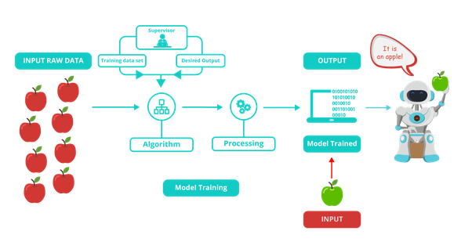

Before we digging into the technical part, I’ll take a simple example how a small baby learns the things.
Well, say for an example, we have shown two pictures to a baby. We told the baby that, the first picture is an apple and the second picture is a banana. While learning this two things, the baby keeps in the mind that if the color is red and the shape is circle, then it is an apple and if the color is yellow and the shape is not circle then it is a banana. That’s how baby learns. Then we showed the third picture and ask the baby to find the fruit either apple or banana. So the moment you showed the third picture, he will identify “Yeah it’s a banana :)”. Because we have already labeled the two pictures into two categories. so the baby knows what is apple and what is banana already. This is how supervised learning works. The basic idea for the supervised learning is, your data provides the examples of situations and for each examples it specifies an outcome. Then the machine will use the training data to build the model which can predict the outcome of the new data based on the past examples. So let’s consider a simple data set of house recently sold